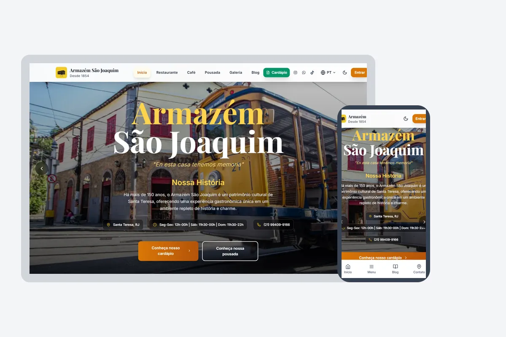

Desenvolvedor Fullstack | C# .NET | React | Node.js
APIs REST | Cloud & DevOps | CI/CD
Clean Architecture | Testes | Observabilidade | Segurança
Desenvolvedor Full Stack | .NET Specialist | Arquitetura de Software
Sou um desenvolvedor Fullstack apaixonado por construir sistemas robustos e escaláveis.
Com uma base sólida em Ciência da Computação e experiência prática em ambientes corporativos, foco em entregar valor através de Clean Architecture, testes automatizados e boas práticas.
Transformo requisitos complexos em soluções eficientes, sempre priorizando performance, segurança e uma excelente experiência para o usuário.
Dev Fullstack focado em sistemas robustos. Uso Clean Architecture para criar soluções eficientes e de alta performance.
Explore minha jornada de desenvolvimento através destes projetos que demonstram diferentes tecnologias e arquiteturas
Desafio técnico Fullstack com Django 5.0 e Angular 17. Integração à PokéAPI, autenticação JWT e painel administrativo.
Arquitetura complexa de Microsserviços utilizando Event Sourcing e CQRS. Implementado com Java Spring Boot, RabbitMQ e PostgreSQL para alta escalabilidade.
Nenhum projeto encontrado
Tente buscar por outra tecnologia ou termo
Minha trajetória profissional e formação acadêmica
Analista de Suporte de TI
Responsável pelo atendimento e registro de chamados técnicos (Nível 1 e 2), garantindo a continuidade das operações de TI. Encarregado do diagnóstico e resolução de problemas...
Formação para Programação
Na Alura, estou seguindo as principais formações no assunto Full-stack, tendo a oportunidade de aprender sobre programação, construção e desenvolvimento de software.
Ciência da Computação
Atualmente, estou cursando Ciência da Computação na Universidade Veiga de Almeida, onde tenho a oportunidade de aprimorar minhas habilidades e conhecimentos em programação desenvolvendo software e projetos para trabalhos escolares.
Desenvolvedor Fullstack
Responsável pelo desenvolvimento fullstack de aplicações web e APIs RESTful utilizando C#, .NET Core, React, Node.js, PHP, Laravel, TypeScript e JavaScript. Experiência em modelagem e otimização...
Tecnologias e competências que domino
Desenvolvimento de APIs robustas e escaláveis com foco em Clean Architecture e boas práticas.
Criação de interfaces modernas e responsivas com foco em performance e experiência do usuário.
Modelagem e otimização de bancos de dados relacionais com foco em performance e integridade.
Deploy e gerenciamento de infraestrutura cloud com automação e monitoramento contínuo.
Garantia de qualidade através de testes automatizados e práticas de segurança robustas.